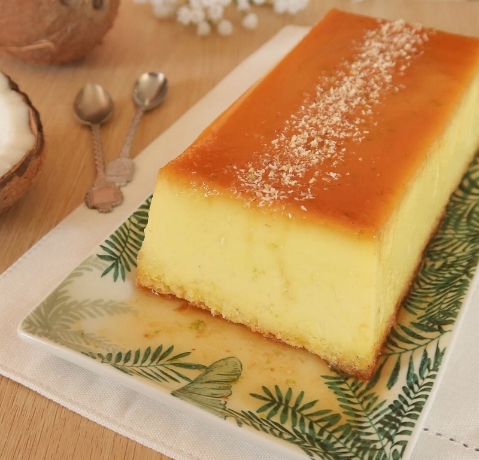

Flan coco

Descrition
Le flan coco antillais, recette special combo by Granny Goes to Heaven.
Dans cette recette, les oeufs ne sont pas battus en neige.
Le resultat n'en est pas moins spectaculaire.
Ingredients
- 3 oeufs
- 150 grammes de sucre
- 250 grammes de lait concentre sucre
- 250 grammes de lait demi ecreme
- 80 grammes de noix de coco en poudre
- Une pincee de sucre vanille ou une gousse de vanille
Steps
- mettre les oeufs avec les blancs dans un grand saladier
- ajouter les 250 grammes de lait concentre sucre
- ajouter le lait demi ecreme
- melanger
- ajouter la noix de coco rapee
- melanger
- faire un caramel avec les 150 grammes de sucre
- deposer son caramel au fond du plat a gateau
- melanger a nouveau le contenu du saladier et verser tout de suite le melange dans le plat a gateau
- faire cuire 45mn dand un four prechauffe a 180 degres
Back to main page